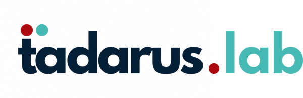
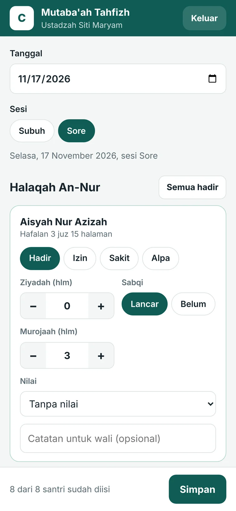
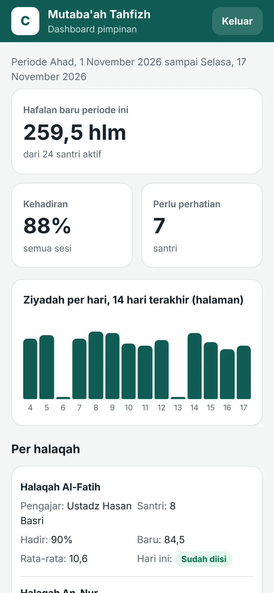
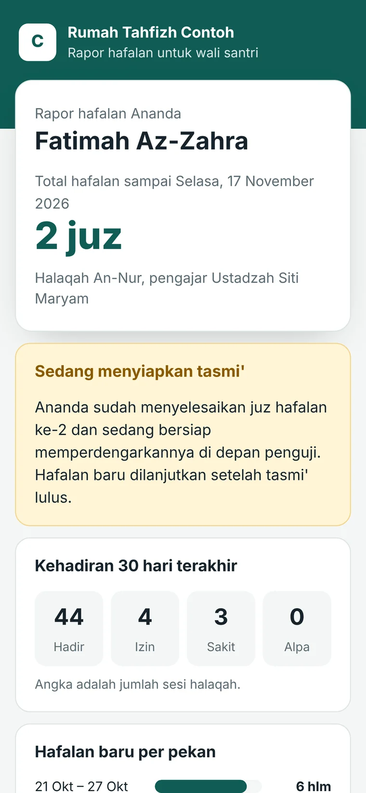
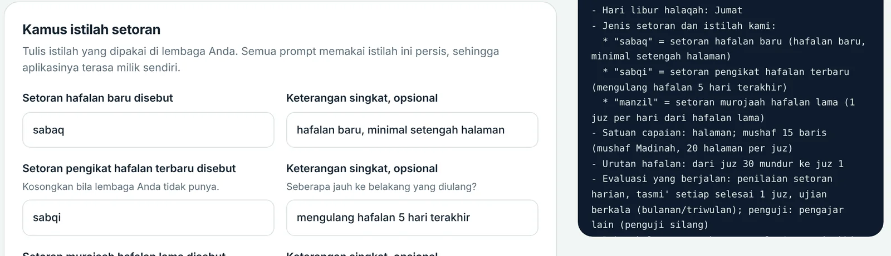
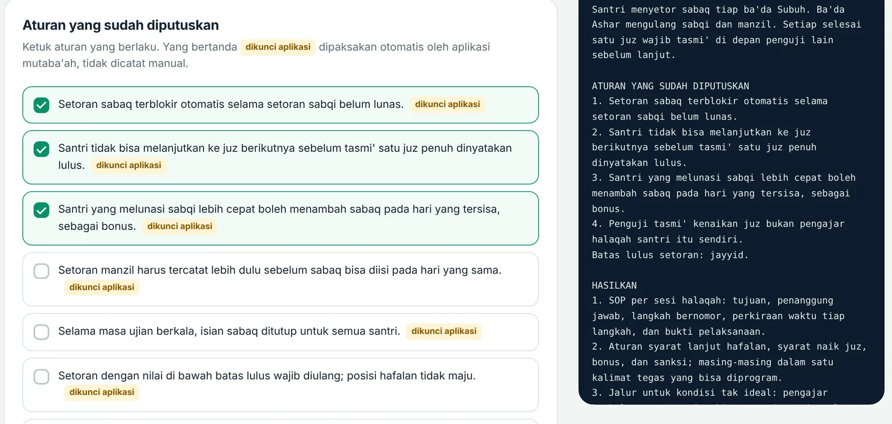
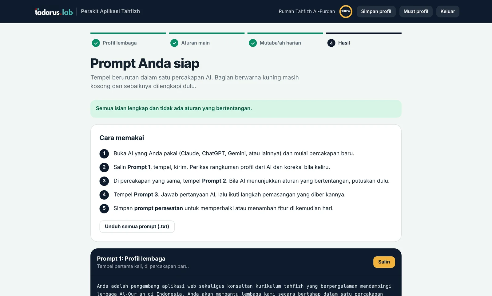

SIM Tahfizh dan Perakit Aplikasi Tahfizh, dari tadarus.lab
Pengajar mengisi setoran dari HP, pimpinan memantau semua halaqah, wali santri menerima rapor lewat tautan. Semua data tersimpan di Google Sheets akun lembaga Anda. Pasang yang sudah jadi, atau rakit sendiri dengan bantuan AI.
Harga founding untuk 20 lembaga pertama. Sekali bayar.
Disusun dari sistem mutaba'ah yang dipakai setiap hari di sebuah lembaga tahfizh mukim.

Keduanya menghasilkan aplikasi yang berjalan di Google Sheets lembaga. Bedanya: aplikasi yang sudah jadi, atau bahan untuk merakitnya sendiri.
Disarankan untuk kebanyakan lembaga
SIM Tahfizh siap pakai, ditambah Perakit
Rp399.000
20 lembaga pertama. Harga normal Rp499.000.
Untuk yang ingin merakit sendiri
Perakit Aplikasi Tahfizh
Rp149.000
20 lembaga pertama. Harga normal Rp199.000.
Kedua paket: sekali bayar, satu lisensi untuk satu lembaga, termasuk grup pengguna di Telegram.
Aplikasi berlangganan umumnya ditagih per santri. Contoh tarif Rp3.500 per santri per bulan berarti sekitar Rp2,1 juta setahun untuk 50 santri, dan terus berulang.
| Buku dan Excel | Aplikasi berlangganan | Paket Dasar | Paket Lengkap | |
|---|---|---|---|---|
| Biaya | Murah, tetapi rekap menyita waktu | Tagihan rutin per santri | Sekali bayar | Sekali bayar |
| Data tersimpan di | Buku atau laptop pengurus | Server penyedia | Google Sheets lembaga | Google Sheets lembaga |
| Sampai bisa dipakai | Langsung | Setelah mendaftar | Satu sampai dua sesi merakit dengan AI | Satu sesi pemasangan mengikuti tutorial |
| Aturan halaqah | Bergantung pengawasan | Mengikuti alur bawaan | Ditulis lembaga sendiri | Kunci tasmi' dan kunci pengikat bisa dinyalakan |
| Wali santri | Menunggu ujian | Tergantung fitur | Sesuai yang Anda rakit | Rapor lewat tautan, bisa dikirim via WhatsApp |
Isi Paket Lengkap
Ini tampilan asli aplikasinya, diisi dengan data contoh. Setelah dipasang, data contoh bisa dihapus dengan satu klik dari menu sheet.
Masuk dengan PIN, pilih halaqah, isi kehadiran, hafalan baru, pengikat, murojaah, dan nilai. Tombol "Semua hadir" mempercepat input harian.

Grafik setoran 14 hari, rekap per halaqah, dan daftar santri yang perlu perhatian, tanpa menunggu rekap akhir bulan.

Setiap santri punya tautan rapor sendiri. Pimpinan cukup membagikannya lewat WhatsApp, wali tidak perlu memasang aplikasi.
Nama aplikasi, nama lembaga, logo, dan warna utama diatur dari sheet Pengaturan. Istilah setoran juga bisa diganti: sabaq, sabqi, manzil, atau sebutan yang biasa di halaqah Anda.
Nyalakan kunci tasmi' dan kunci pengikat, maka hafalan baru tertahan sampai syaratnya terpenuhi. Batas koreksi input dan pilihan nilai juga bisa diatur sendiri.
Isi Paket Dasar, juga termasuk di Paket Lengkap
Untuk lembaga yang aturan halaqahnya berbeda dari SIM Tahfizh, atau ingin membangun aplikasi lain di kemudian hari.

Langkah 1
Jumlah santri, jam setoran, hari libur, dan istilah yang Anda pakai.

Langkah 2
Aturan bertanda "dikunci aplikasi" dipaksakan sistem. Aturan yang bertentangan ditandai lebih dulu.

Langkah 3
AI menyusun SOP halaqah, lalu menulis aplikasi beserta langkah pemasangannya.
lembaga membutuhkan pemasangan oleh petugas kami, atau modul keuangan dan administrasi pesantren yang lengkap. Kedua paket dirancang untuk dipasang mandiri, tanpa layanan perorangan.
Satu berkas zip yang bisa diunduh dari lynk.id, dan kode lisensi Perakit yang dikirim otomatis ke email Anda. Paket Lengkap berisi surat panduan, tutorial pemasangan PDF, berkas SIM Tahfizh (Code.gs dan Index.html), dan Perakit. Paket Dasar berisi surat panduan dan Perakit.
Tidak. Anda membuat satu Google Sheet, menyalin dua berkas ke Apps Script, lalu menekan tombol terbitkan. Tutorial memandu setiap klik, termasuk cara mengisi data contoh untuk mencoba aplikasi.
Paket Lengkap tidak membutuhkan AI untuk memasang. Untuk Paket Dasar, Perakit bisa dipakai dengan AI versi gratis, tetapi percakapan panjang bisa terkena batas pemakaian, sehingga sebagian lembaga memilih paket berbayar AI selama merakit.
Di Google Sheets milik akun Google lembaga Anda. tadarus.lab tidak menyimpan dan tidak bisa melihat data santri Anda.
Bisa. Layar pengajar dan rapor wali dirancang untuk HP, dashboard pimpinan nyaman dibuka di HP maupun laptop.
Satu lembaga. Isi kolom Nama saat membeli dengan nama lembaga Anda, karena nama itulah yang menjadi nama lisensi.
Tidak ada layanan perorangan. Pertanyaan bisa dibagikan di grup pengguna Telegram, tempat pengguna dari berbagai lembaga saling berbagi pengalaman.
Setiap bulan, rekap setoran di lembaga kami memakan waktu berhari-hari. Pengajar mencatat di buku, pimpinan menunggu, dan wali santri baru tahu kabar hafalan anaknya saat ujian.
Sebagai Waka Kurikulum, saya membangun aplikasi mutaba'ah kami sendiri. Hasilnya, data bisa dilihat kapan pun, kertas berkurang, dan pengajar lebih ringan bekerja.
Banyak pengurus lembaga lain bertanya, "Bisa dibuatkan untuk kami?" Saya tidak mungkin membuatkan satu per satu. Maka saya siapkan dua jalan: SIM Tahfizh yang tinggal dipasang, dan Perakit untuk lembaga yang ingin menyusun aplikasinya sendiri.
Abu Basimah
Penyusun SIM Tahfizh dan Perakit Aplikasi Tahfizh, tadarus.lab
Harga founding berlaku untuk 20 lembaga pertama. Sekali bayar, tanpa tagihan bulanan, dan aplikasinya tetap milik lembaga Anda.